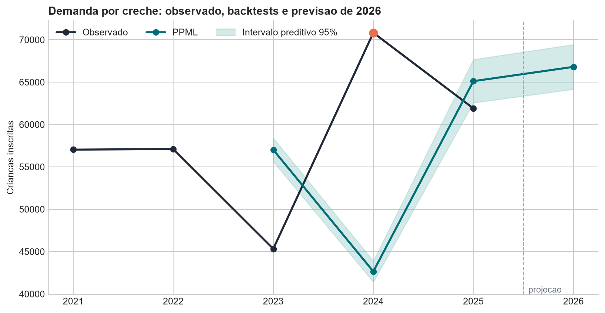

Performance historica e previsao de demanda
Alvo: numero de criancas inscritas, contando cada crianca uma vez. O modelo e um PPML com efeitos fixos de territorio e faixa etaria, tendencia por faixa e exposicao da coorte elegivel.

Serie anual
| Ano | Status | Observado | PPML | Intervalo 95% | Persistencia |
|---|---|---|---|---|---|
| 2021 | historico treino | 57.033 | - | [-; -] | - |
| 2022 | historico treino | 57.107 | - | [-; -] | - |
| 2023 | backtest oos | 45.327 | 57.009 | [55.616; 58.403] | 54.241 |
| 2024 | Quebra de cobertura na extracao | 70.828 | 42.653 | [41.415; 43.891] | 43.286 |
| 2025 | backtest oos | 61.902 | 65.114 | [62.555; 67.674] | 66.673 |
| 2026 | previsao | - | 66.801 | [64.159; 69.443] | 59.718 |
Performance fora da amostra
| Ano | Treino | WAPE PPML | Vies PPML | Cobertura 95% | WAPE persistencia |
|---|---|---|---|---|---|
| 2023 | 2021-2022 | 34,9% | 25,8% | 57,9% | 25,2% |
| 2024* | 2021-2023 | 41,0% | -39,8% | 43,9% | 39,8% |
| 2025 | 2021-2024 | 24,0% | 5,2% | 86,3% | 16,0% |
* 2024 tem quebra de cobertura. WAPE e o erro absoluto total dividido pela demanda observada. A cobertura mede a proporcao de celulas territorio-faixa cujo realizado caiu no intervalo.
Como interpretar
O ponto de 2026 e a melhor estimativa do modelo. O intervalo de 95% e preditivo e condicional: incorpora a dispersao historica das contagens, mas nao incerteza sobre revisoes futuras da base ou mudancas de cobertura. Ele e mais apropriado para planejamento do que um intervalo apenas dos coeficientes.
Arquivos reproduziveis: previsao_historica_2021_2026.csv e performance_historica_2023_2025.csv.